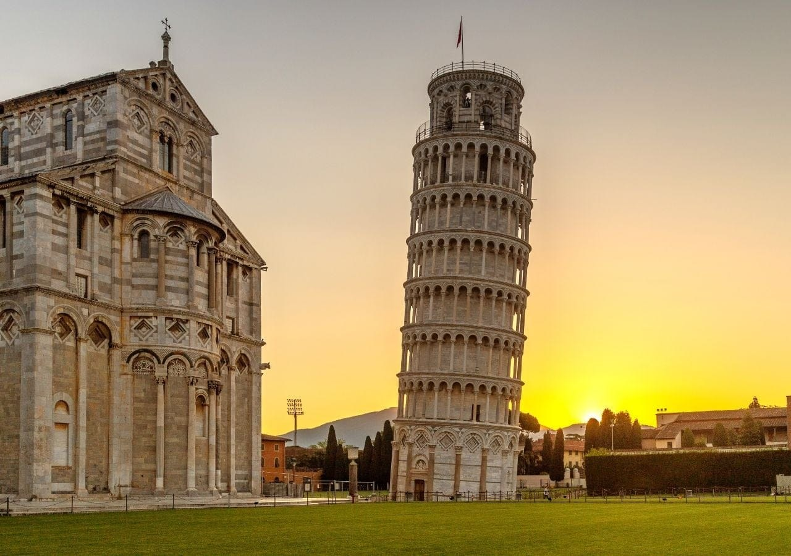
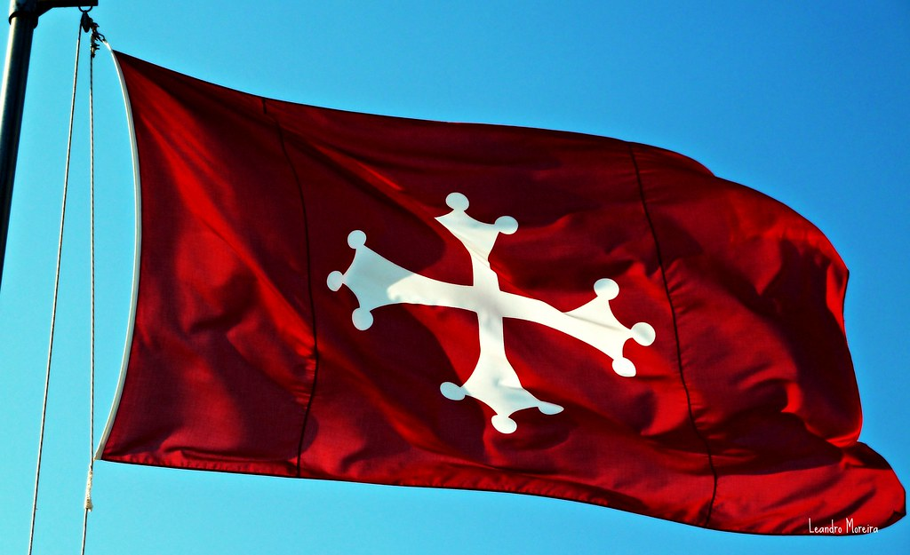
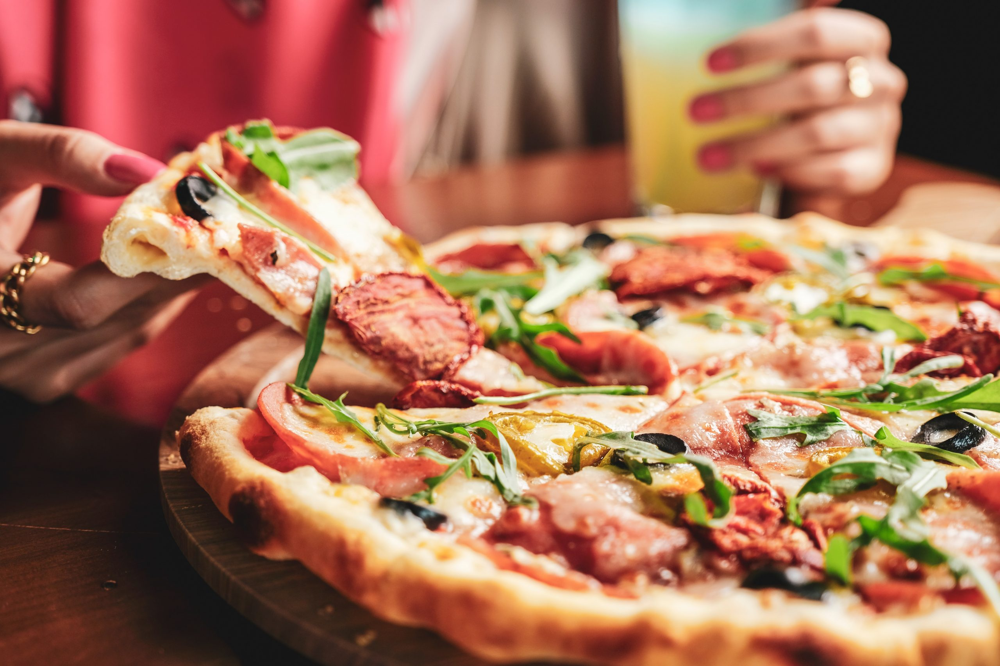
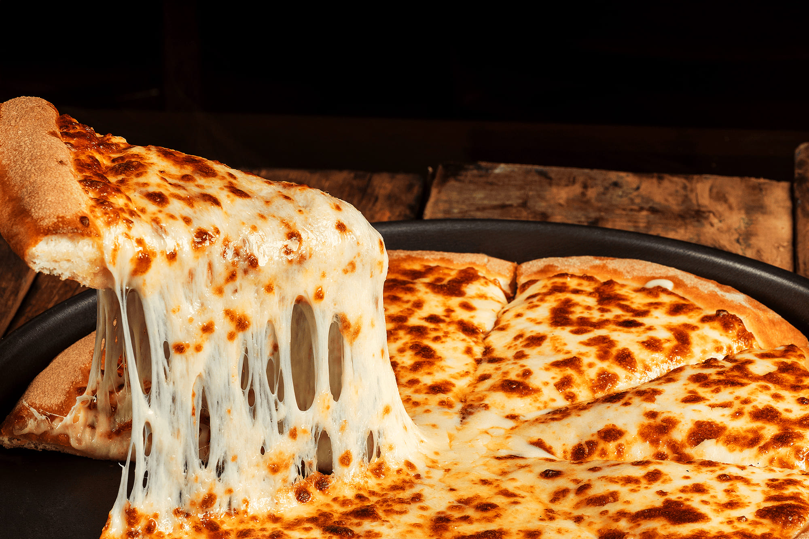

A torre possui cerca de oito andares e é revestida de mármore branco.
GEOGRAFIA & CULTURA
Mais do que uma torre torta.
Pisa ficou mundialmente conhecida por seu campanário inclinado, mas sua identidade também aparece em símbolos medievais e na cultura gastronômica italiana.
01 — O ÍCONE
A Torre de Pisa
Um campanário medieval localizado na Praça dos Milagres, famoso pela inclinação que começou a surgir logo nos primeiros anos da construção.

Seu enorme peso atua sobre um terreno de baixa resistência.
No topo ficam os sete sinos associados à função de campanário.
HISTÓRIA E CONSTRUÇÃO
1173
O começo
A construção teve início em agosto de 1173.
GUERRAS
Longas pausas
Conflitos na região contribuíram para que a obra avançasse lentamente.
1372
Conclusão
Após quase dois séculos, a torre foi concluída.
“
O solo começou a ceder antes mesmo que a construção terminasse.
É essa relação entre peso, solo e fundação que explica sua inclinação.POR QUE ELA É TORTA?
O problema começa no chão.
ARGILA
AREIA
CASCALHO
A base foi construída sobre um terreno frágil, composto de argila, areia e cascalho. O lado sul afundou mais do que o norte, fazendo a torre inclinar.
5,5°
inclinação máxima registrada
em 1993, antes das intervenções de estabilização
02 — UM SÍMBOLO
A bandeira de Pisa
O vermelho e a famosa Cruz Pisana aparecem ligados à história medieval da antiga República de Pisa.

Origem histórica
Uma tradição histórica relaciona a concessão do estandarte ao Papa Bento VIII, no início do século XI, como símbolo usado pelas tropas pisanas.
Cruz do povo
Com o tempo, a cruz passou a representar a comunidade livre da república marítima, aparecendo em frotas e edifícios públicos.
Formato e lendas
A cruz possui extremidades com pequenos círculos ou “pomos”. Lendas medievais, interpretações religiosas e possíveis conexões com a tradição occitana deram ao símbolo várias explicações.
03 — SABOR ITALIANO
Da rua de Nápoles para o mundo.
A história da pizza também passa por mudanças sociais, ingredientes e cultura.
A ORIGEM DA PIZZA
Começou como comida simples.
A pizza italiana surgiu em Nápoles por volta do século XVII como uma opção prática e barata para alimentar trabalhadores.


01
Comida de rua
Massa de trigo, água, sal e fermento, aberta de forma simples e assada em forno a lenha.
02
Coberturas simples
Azeite, banha, alho, sal, peixe ou queijo apareciam entre os ingredientes mais acessíveis.
03
O tomate entra em cena
Com a popularização do tomate na cozinha napolitana, a pizza ganhou a aparência que ficou famosa.
1889
Margherita
Raffaele Esposito é associado à versão com tomate, mussarela e manjericão criada para a visita da rainha Margherita.